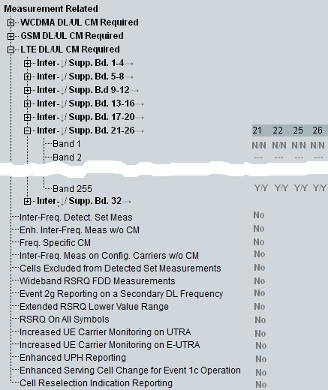

This section provides UE capabilities for the neighbor cell measurement related to compressed mode.

"Inter-/Supp.BD. x-y":
Indicates the UE neighbor cell measurement capabilities in compressed mode for inter-band WCDMA neighbor cell measurement. Display shows the capabilities for all WCDMA bands and multi-carrier operation.
Example: YY means that the UE requires compressed mode in DL and UL to measure neighbor cells during a call.
Remote command:"Inter-/Supp.BD. x-y":
Indicates the UE neighbor cell measurement capabilities in compressed mode for inter-RAT GSM neighbor cell measurement including several GSM bands. Display shows the capabilities for all WCDMA bands.
Example: YY means that the UE requires compressed mode in DL and UL to measure neighbor cells during a call.
Remote command:"Inter-/Supp.BD. x-y":
Indicates the UE neighbor cell measurement capabilities in compressed mode for inter-RAT LTE neighbor cell measurement including all supported LTE operating bands (1 to 255). Display shows the capabilities for all WCDMA bands.
Example: YY means that the UE requires compressed mode in DL and UL to measure neighbor cells during a call.
Remote command:Indicates the UE capabilities related to inter-frequency measurements.
- "Inter-Freq. Detect. Set Meas":
Indicates whether the UE is able to measure inter-frequency detected set. - "Enh. Inter-Freq. Meas w/o CM":
Indicates whether the UE requires compressed mode for measurements on two additional frequencies. - "Freq. Specific CM":
Indicates whether the UE can apply compressed mode outside of the used frequency bands only to the configured frequencies. This information is relevant only for the dual band operation - "Inter-Freq. Meas on Config. Carriers w/o CM":
Indicates whether the UE requires compressed mode to measure on the frequencies which are configured for HS-DSCH operation and associated with the secondary serving HS-DSCH cells - "Cells Excluded from Detected Set Measurements":
Indicates whether the UE supports exclusion of cells from intra-frequency detected set measurements - "Wideband RSRQ FDD Measurements":
Indicates whether the UE is able to perform wideband RSRQ FDD measurements - "Event 2g Reporting on a Secondary DL Frequency":
Indicates whether the UE supports reporting event 2g on a configured secondary downlink frequency - "Extended RSRQ Lower Value Range":
Indicates whether the UE supports the extended RSRQ lower value range from -34 dB to-19.5 dB in measurement configuration and reporting - "RSRQ on all Symbols":
Indicates whether the UE supports the RSRQ measurement on all OFDM symbols and the extended RSRQ upper value range from -3 dB to 2.5 dB in measurement configuration and reporting - "Increased UE Carrier Monitoring on UTRA / E_UTRA":
Indicates whether the UE supports increased number of UTRA / E-UTRA carrier monitoring in connected and idle mode - "Enhanced UPH Reporting":
Indicates whether the UE supports reporting of filtered UPH measurement - "Enhanced Serving Cell Change for Event 1c Operation":
Indicates whether the UE supports simultaneous HS-DSCH reception from serving cell and decoding of an HS-SCCH sent from another cell in the active set when an event 1c measurement report requesting serving HS-DSCH cell change is triggered - "Cell Reselection Indication Reporting":
Indicates whether the UE supports cell reselection indication reporting in CELL_FACH state when common E-DCH resource is allocated